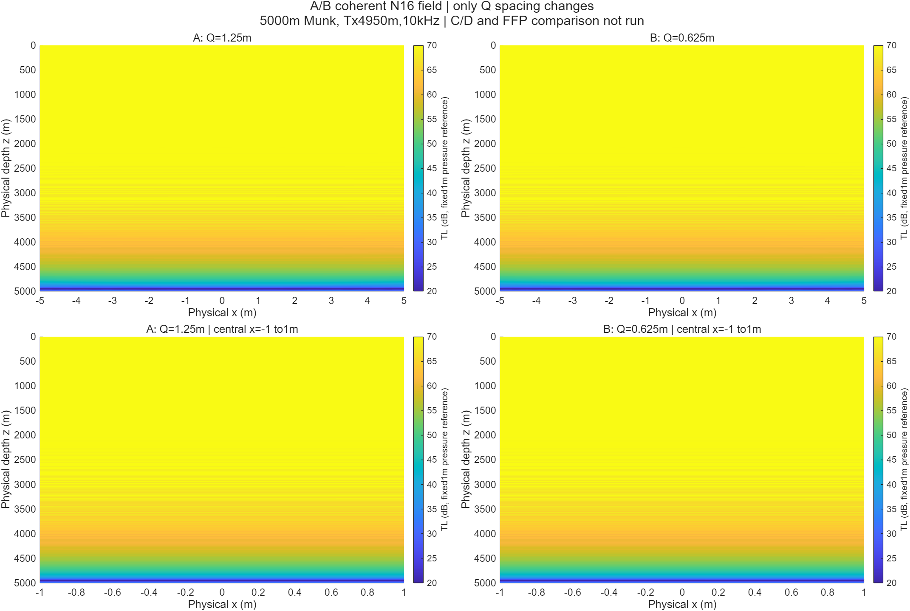
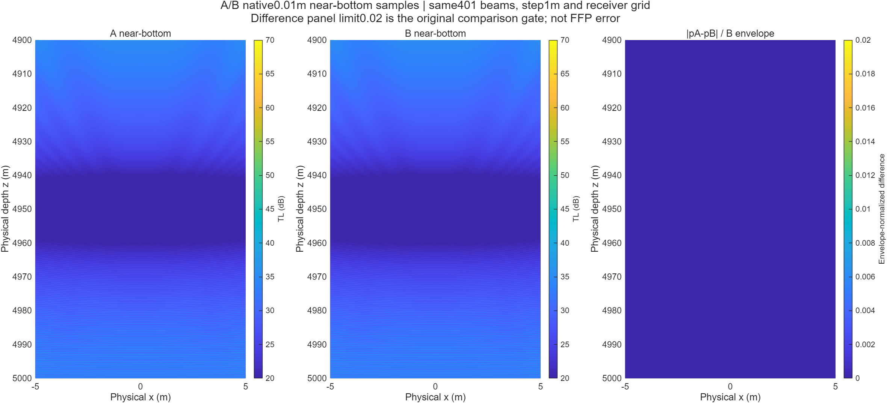
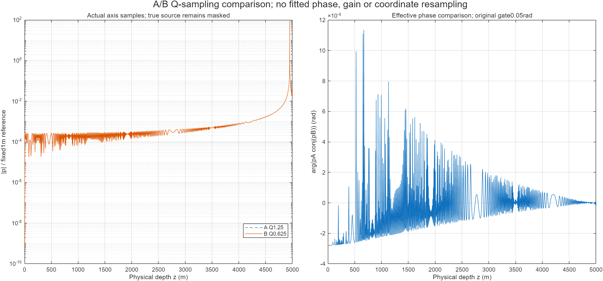

仅Q间隔1.25→0.625m；5000m Munk、源4950m、10kHz、N16、401反射束、原接收网格和步长不变。C/D及FFP新计算未执行，模型假设不等于论文原参数。



TL=-20log10|p|，固定1m参考；20–70dB仅显示范围，原复数和超限值保存在MAT。没有插值、平滑、补轴或任意幅相拟合。全深度5m只作概览；各图同名FIG可编辑。阶段通过与否以中文报告和原始CSV门槛为准。